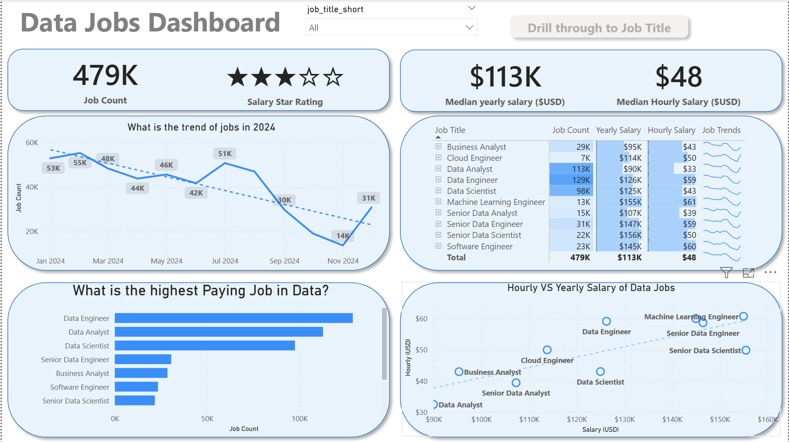
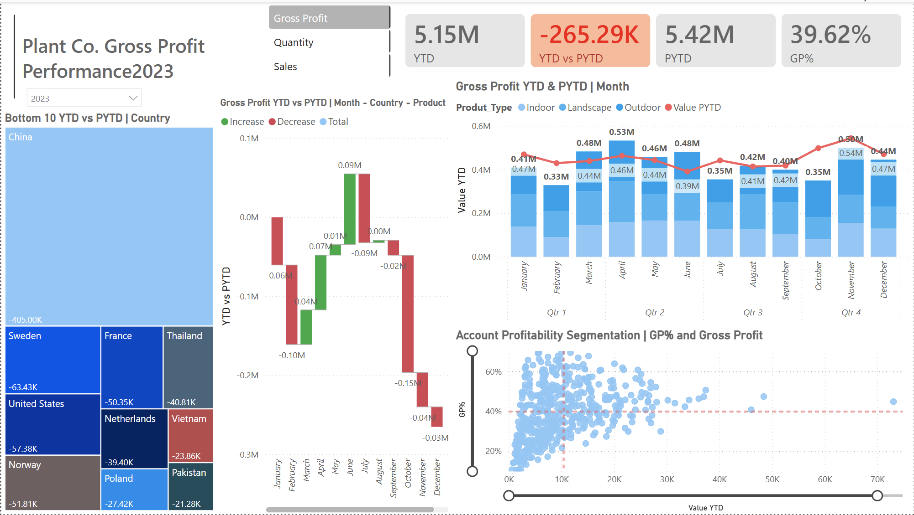
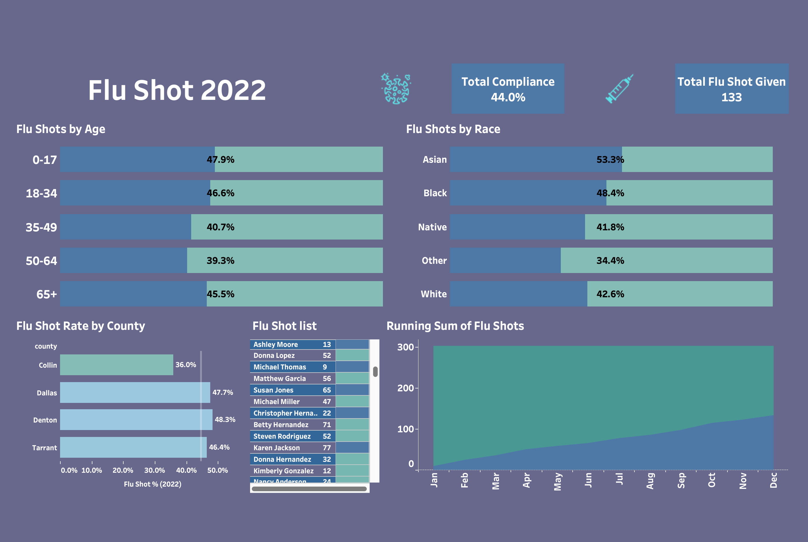
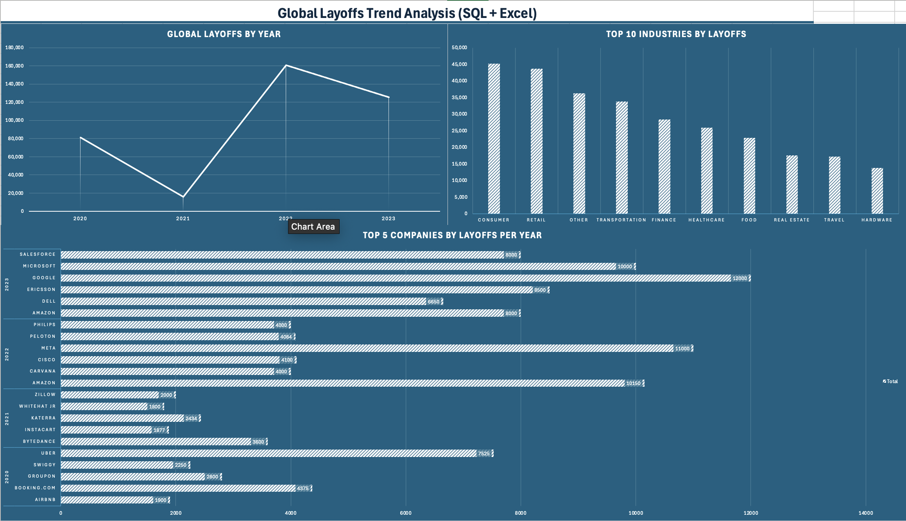
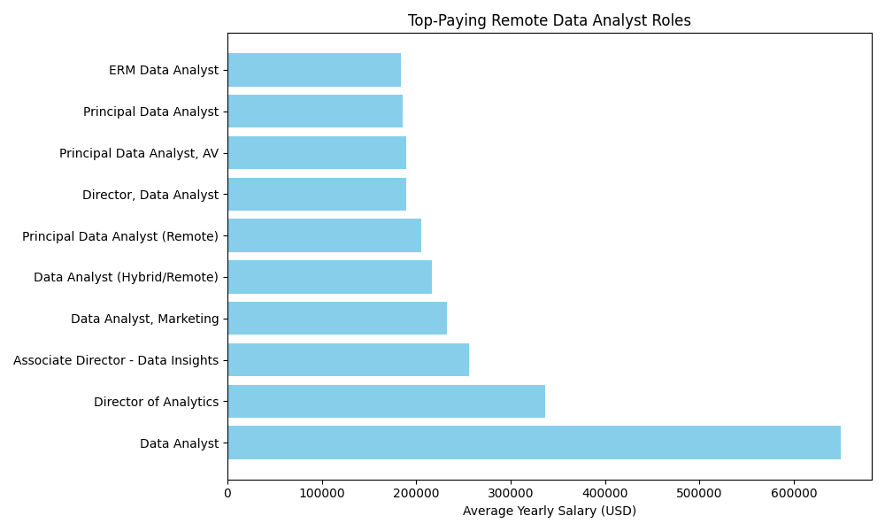
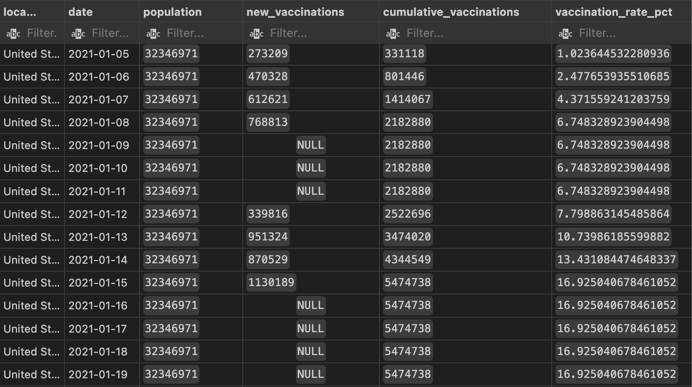
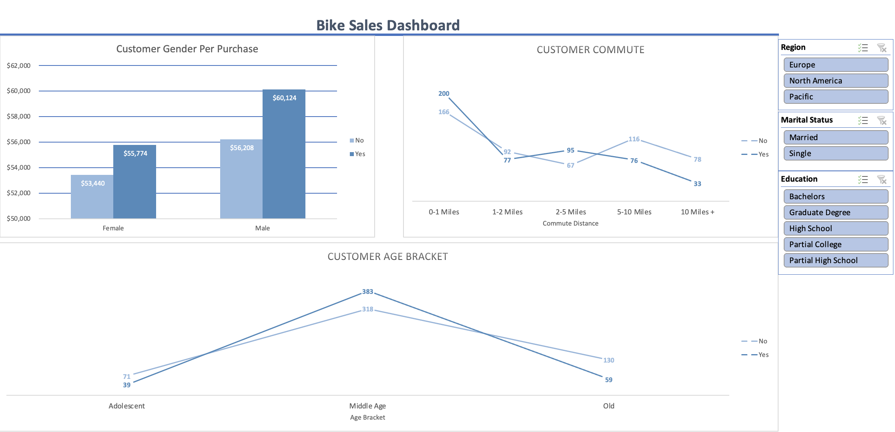
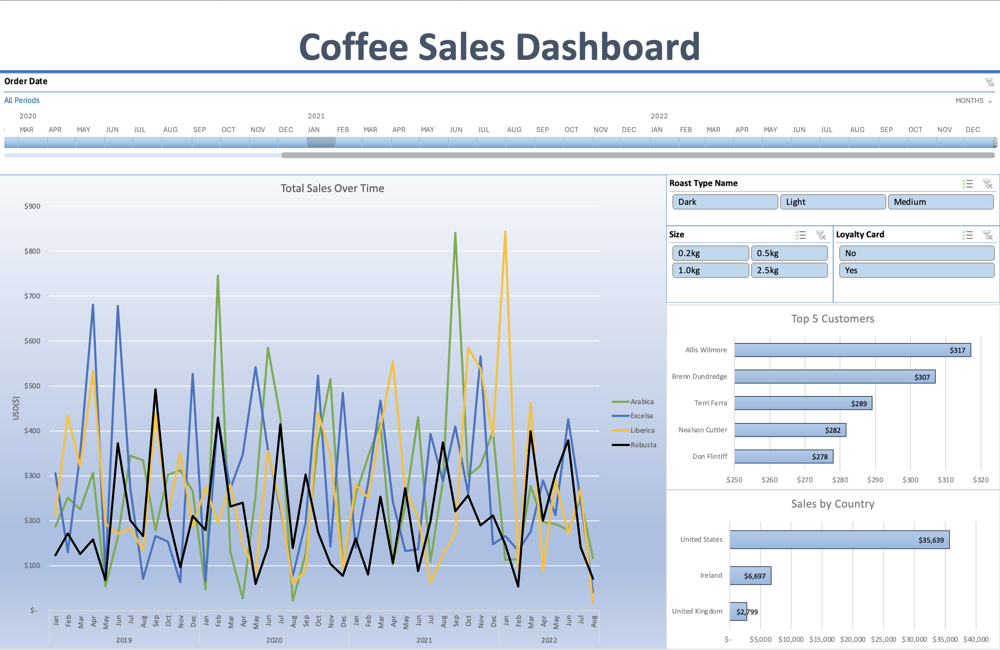

About
I build data-driven projects that transform raw datasets into structured, actionable insights.
My work focuses on SQL-based analysis and dashboard development that support
decision-making through clear visual reporting.
Core Tools: SQL (PostgreSQL/MySQL) • Excel (Power Query, Pivot Tables, Dashboards) • Tableau • Power BI
My Analytics Process
I build analysis projects end-to-end: clean the data, validate it, answer business questions with SQL,
and present results in a format stakeholders can actually use.
1) Clean & Validate
Fix data types, handle nulls, standardize fields, and verify joins so analysis is reliable.
2) Explore & Analyze
Use aggregations, CTEs, and window functions to find patterns, trends, and drivers.
3) Build a Reporting Layer
Create reusable views/tables that make dashboards and reporting consistent and repeatable.
4) Visualize & Communicate
Summarize findings with clean dashboards in Excel, Tableau, and Power BI, supported by clear documentation.
Built an interactive Power BI dashboard to explore 2024 data science job postings, including job titles,
salary ranges, and location trends. Designed to help job seekers and career switchers better understand
compensation, demand, and market distribution.
Tools: Power BI • Power Query • DAX • KPI Cards • Maps • Slicers • Drill-through • Bookmarks


Built an interactive Power BI dashboard analyzing Sales, Quantity, and Gross Profit using YTD vs PYTD comparisons.
Designed to identify performance trends, monthly drivers, and key contributors through dynamic metric switching
and drill-down analysis across geography, product categories, and customer accounts.
Tools: Power BI • DAX • Power Query • Data Modeling • Time Intelligence • Drill-down Analysis

Built an end-to-end Tableau dashboard analyzing product-level sales performance from 2019–2022.
The project focuses on identifying revenue drivers, seasonal trends, and areas of underperformance
through structured exploratory analysis and KPI tracking.
Tools: Tableau Public • Excel • Data Cleaning • Exploratory Analysis • KPI Design

Analyzed 2022 flu shot compliance among active patients using SQL and Tableau. Built a patient-level dataset
to track vaccination status, measure compliance across age, race, and county, and visualize vaccination
progress over time in an interactive dashboard.
Tools: SQL • PostgreSQL • CTEs • Joins • CASE Logic • Tableau

SQL-driven analysis of global layoffs with time-based trends, industry impact, and yearly company rankings
using CTEs and window functions. Results are presented in a clean Excel reporting dashboard.
Tools: MySQL • SQL (CTEs, Window Functions, DENSE_RANK) • Excel • PivotTables • Git/GitHub

Analyzed salary trends, in-demand skills, and geographic compensation differences
using advanced SQL queries and aggregations.
Tools: SQL • PostgreSQL • CTEs • Window Functions • Git

Built cleaned reporting views and explored global COVID trends including infection rates, daily death rate patterns,
and vaccination progress using joins, aggregations, CTEs, and window functions. Includes a final reporting view
designed for future visualization.
Tools: PostgreSQL • Views • Joins • CTEs • Window Functions

Designed an interactive Excel dashboard analyzing customer purchase behavior,
segmenting trends by income, commute distance, and age bracket.
Tools: Excel • Power Query • Pivot Tables • Slicers

Developed a multi-year revenue dashboard analyzing sales trends (2019–2022),
top customers, and geographic distribution.
Tools: Excel • Power Query • Pivot Tables • Timeline Slicer